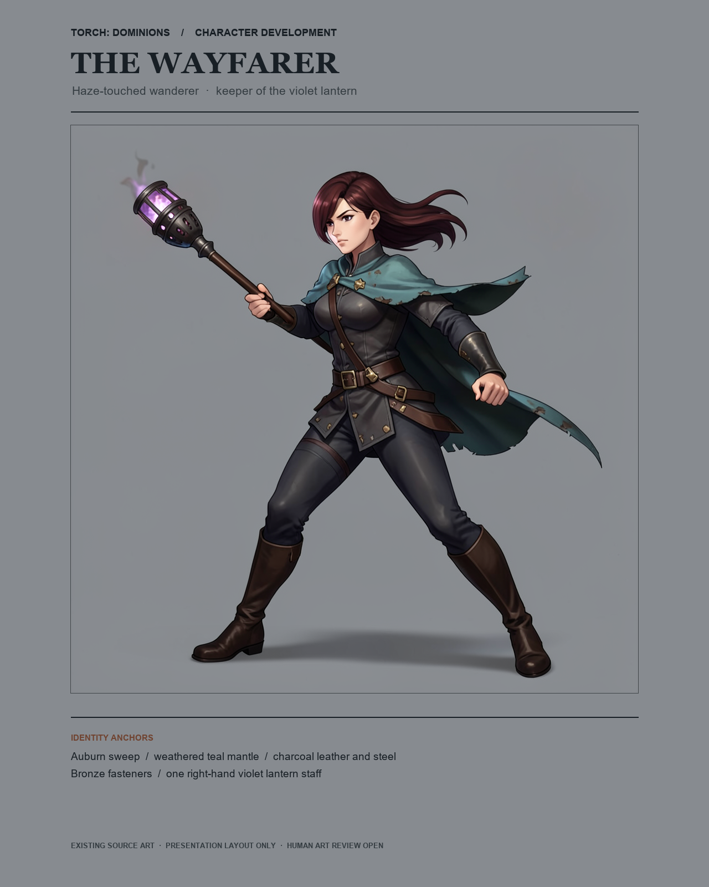
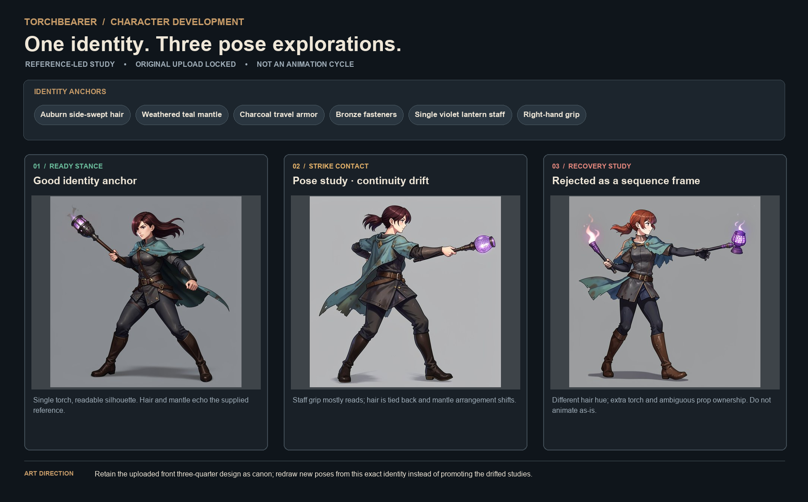

Hero candidate · editorial presentation of existing art

Existing generated sourceLocked supplied referenceReference identity annotations
An art-direction handoff centered on the supplied Torch heroine: painterly dark fantasy, anime-scale readability, a worn teal mantle, charcoal travel gear, and a single violet lantern staff.

Existing generated sourceLocked supplied referenceReference identity annotations
Human art direction still must approve the hero for game use. Existing pose sources drift in hair, mantle, and torch ownership; redraw them before treating them as sequence frames.

Annotated locked identity reference
Contact changes the hair arrangement; recovery changes hair hue and introduces another torch. Keep the ready stance as a stronger identity anchor; revise strike and recovery as independent designs until exact-one-prop ownership and identity hold.